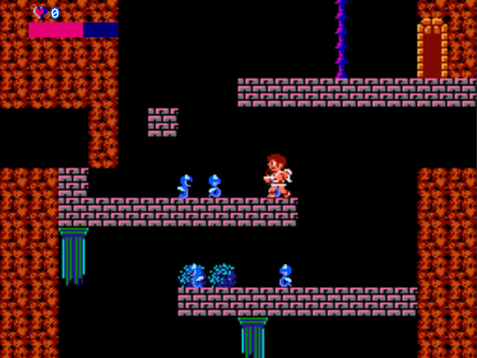
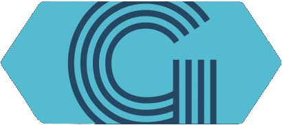

Un enfoque moderno da tecnoloxía
ACERCA
Ola! O meu nome é Sergio, son un desarrollador e tradutor autónomo. Empecei a programar aos 11 anos, impulsado unicamente pola curiosidade. Non puiden evitar amalo, desde ese momento estiven programando sen pausa. Durante anos, dediqueime ao desarrollo de videoxogos, experimentando con diferentes entornos e linguaxes.
Fai uns anos, expandín os meus horizontes e empeceime a interesar no desarrollo para Android e web. Isto permitiume adquirir un coñecemento moito máis profundo das tecnoloxías utilizadas a día de hoxe. É por isto que podo moverme en ambos campos, front-end e back-end, o que me permite ser un desarrollador Full Stack.
Mentres aprendía a programar, empecei a construir unha forte relación co inglés. Empecei a usalo para todo, ata que cheguei ao punto onde era capaz de traducir o que quería sen esforzo, así que empecei a traballar como tradutor.
HABILIDADES
IDIOMAS
- Español - Nativo
- Galego - Nativo
- Inglés - nivel C2 (en proceso de certificación)
- Portugués- capaz de entender documentos non técnicos
LINGUAXES DE PROGRAMACIÓN
- Python
- Javascript
- C++
- Java
- C#
- HTML
- CSS
TECNOLOXÍAS
- NodeJS
- Notepad++
- Unity 3D
- Tkinter
- JQuery
- SDL
- LibGDX
- Atom - editor de texto
- Blender 3D
- Gamemaker
- Eclipse
- Idea IntelliJ
- Phaser
- Tiled editor
- Bootstrap
- Jekyll
TRABALLO
Páxina web personal
Esto propio sitio é, por suposto, uno dos meus traballos como programador e desarrollador web. Atopo que ter unha páxina web persoal é unha das mellores cousas que podes facer como autónomo. É o punto de entrada a partir do cal os demais poden saber quen eres, que fas e como contactarte.
Así pois, no momento que me fixe autónomo, o primeiro por facer era obviamente esta páxina web. Enfoqueina desde una perspectiva moderna; sendo a elegancia, o minimalismo e a adaptabilidade os pilares principales do proxecto.
Podes ver todo o deasrrollo no meu Github.
The Tryangle
Este foi o primer proxecto que rematei como programador. Empecei cando tiña 14 anos e acabei un ano e medio despois, traballando unicamente no meu tempo libre. Nun principio, o fixen en GameMaker, pero na mitade do desarrollo decidín movr todo o proxecto a Unity. Polo tanto, aprendín c# e refixen o xogo desde as bases usando as [novas] características 2D de Unity. Cando tiña 17 anos finalmente decidinme a publicalo.
Tendo en conta a idade e experiencia que tiña cando o fixen; nin o deseño, nen o deseño gráfico, nen a programación son unha representación real das miñas habilidades actuais. Sen embargo, para o coñecemento que tiña pola época, o considero unha proba excelente da miña vocación e dedicación.
Kid Icarus con Javascript
Mentres estaba na universidade, un amigo e mais eu decidimos facer una versión reducida de Kid Icarus. Para facelo, utilizamos HTML, Javascript, Phaser e NodeJS. O proxecto completo está disponible e aberto en Github , onde ademais podes xogalo directamente a través de Github Pages.
O foco principal do desarrollo estaba posto na programación, dado que non éramos diseñadores e ese non era o obxectivo do proxecto. Polo tanto, a nosa primeira prioridade era facer unha arquitectura de software sólida e escalable, mentres seguíamos aprendendo sobre as tecnoloxías que estábamos a usar.
Periodismo de videoxogos
Sempre fun un gran amante dos videoxogos e da literatura. Mezclar os dous nalgún momento parecía un paso lóxico no meu camiño. Un día calquera, atopei a oportunidade de facer unha proba para unha revista dixital de videoxogos, sen duda tiña que intentalo. Tras pasar, empecei a traballar como periodista de videoxogos.
Tras tres meses, dinme conta de que non era o que esperaba, así que o deixei. Aínda así, mentres traballaba alí aprendín un montón sobre escribir e entregar contenido de calidade profesional. Ademais, tiven que traducir un montón do inglés [noticias, declaraciones, entrevistas] ao español, adquirindo unhas habilidades de tradución sólidas.
Aquí tes un dos meus mellores traballos.
Moito máis por venir!
Levo sendo programador autodidacta máis dunha década, e tradutor autodidacta por casi 3 anos. Iso é algo que non vai parar agora. Sempre estou tratando de aprender máis, de facer máis e de ser mellor no que fago. Se queres propoñerme un proxecto, non dudes en contactarme!
No que respecta aos proxectos personais, estou agora mesmo traballando en diferentes cousas. Estou a facer un editor de tilemaps en Python utilizando Tkinter y JSON. Tamén estou profundizando no desarrollo front-end usando Jquery e Bootstrap como as miñas tecnoloxías principais. Ademais, teño algunhas aplicacións de Android [Java] en desarrollo, as cales chegarán á Play Store cando estén rematadas.
CONTACTO
EXTRA
Teño algunhas facetas non relacionadas co traballo que pode que atopes interesantes.
Levo xogando videoxogos 16 anos, ese é sin duda meu maior hobby. Aos 11 anos decidín que quería aprender a facer aquilo que tanto me gustaba. Así que empecei a experimentar con motores de xogo tales que Scratch, RPG Maker ou GameMaker. Isto, combinado coa miña experiencia como periodista de videoxogos, significa que teño un coñecemente moi profundo da industria desde tres puntos de vista diferentes: desarrollador, periodista e xogador.
Apasiónanme todos os deportes de forza, e eu mismo son atleta de calistenia, aquí podes ver o que fago. Levo entrenando casi catro anos agora, e incluso se iso non ten unha relación directa co meu traballo, entendo que é una clara proba da miña dedicación ás cosas que amo. Tamén xoguei ao baloncesto por 8 anos e practiquei patinaxe artístico por 3.